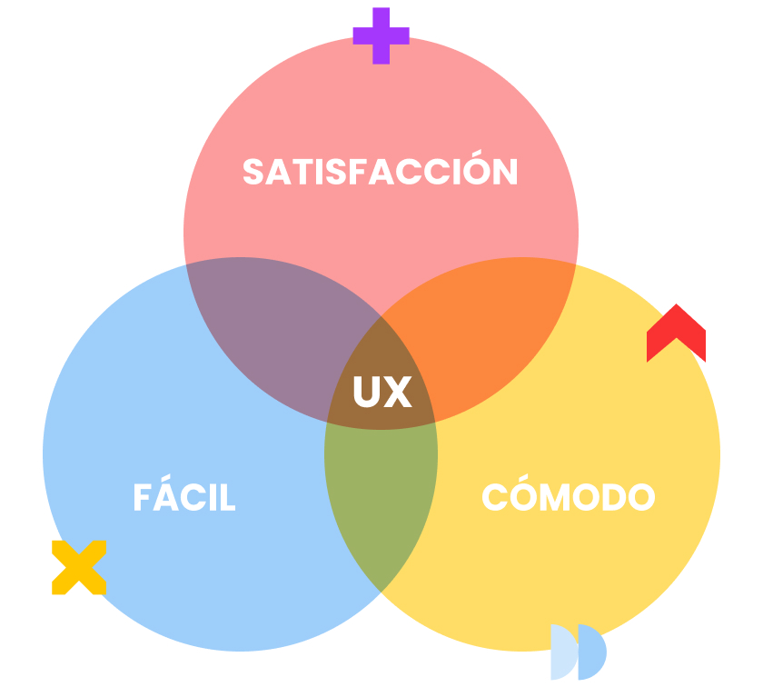

1. Visibilidad del estado del sistema
El usuario siempre debe saber qué está pasando.
Ejemplo UX: mostrar "Guardando…" y luego "Guardado" tras enviar un formulario.
Fundamentos del
El diseño de experiencia de usuario es parte de principios del diseño, la psicología, la ingeniería y los negocios para crear experiencias tanto intuitivas como agradables para el usuario recurriendo a sondeos y a la comprensión de las necesidades de los usuarios.

Publicadas en 1994 por Jakob Nielsen, estas heurísticas se usan como guia para la creación y evaluación en el diseño de experiencia de usuarios.
El usuario siempre debe saber qué está pasando.
Ejemplo UX: mostrar "Guardando…" y luego "Guardado" tras enviar un formulario.
Hablar el idioma del usuario, no el del sistema.
Ejemplo UX: "Carrito" en vez de "session_cart_items".
El usuario decide cuándo avanzar, volver o cancelar.
Ejemplo UX: poder deshacer un borrado o cancelar un pago.
Mismos patrones en toda la experiencia.
Ejemplo UX: el mismo tipo de confirmación para acciones similares.
Evitar que el error ocurra, no solo avisar después.
Ejemplo UX: confirmar antes de eliminar una cuenta.
Mostrar opciones, no obligar a memorizar.
Ejemplo UX: autocompletar direcciones en vez de pedirlas de memoria.
Adaptarse tanto a novatos como a expertos.
Ejemplo UX: búsqueda simple para todos + filtros avanzados para quien los quiera.
Solo la información necesaria en cada momento.
Ejemplo UX: un checkout sin campos opcionales que distraigan.
Mensajes claros, en lenguaje humano, con solución.
Ejemplo UX: "La contraseña debe tener 8 caracteres" en vez de "Error 422".
Facilitar soporte cuando el usuario lo necesita.
Ejemplo UX: FAQs, tooltips, centro de ayuda contextual.